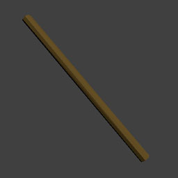
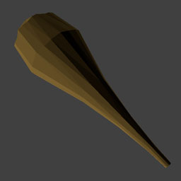
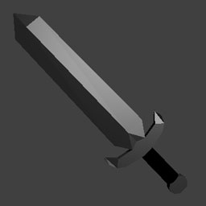
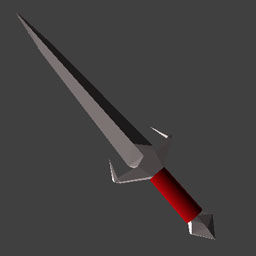
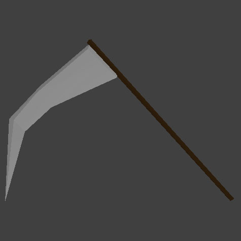
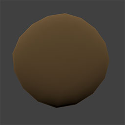
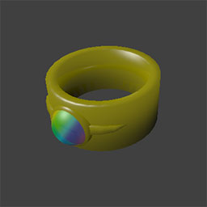
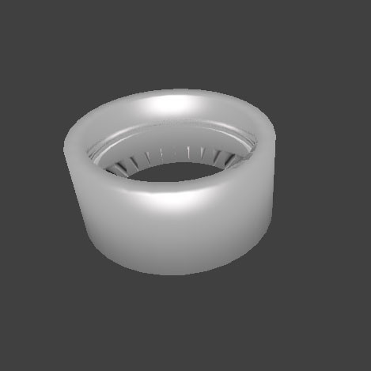
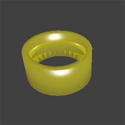

|  | Wood Stick（木の棒） |
| Off +2 / Agi ±0 / Spd 0 | |
| ただの棒切れ。素手で戦うよりは有利。男性の心に落ちていることがある。 | |
|  | Cudgel（こん棒） |
| Off +4 / Agi -1 / Spd 1 | |
| 木製だが攻撃力は高め。男性の心にときどき落ちている。 | |
|  | Iron Sword（鉄の剣） |
| Off +6 / Agi -2 / Spd 2 | |
| 鉄製の剣。重いのでレベルが低いうちは使いこなすのが難しい。成人男性の心に落ちていることがある。 | |
|  | Justice Sword（ｼﾞｬｽﾃｨｽｿｰﾄﾞ） |
| Off +10 / Agi -1 / Spd 3 | |
| Justiceが持つ剣。軽めだが攻撃力が高い。 | |
|  | Death Scyth（ﾃﾞｽｻｲｽﾞ） |
| ? | |
| 死神の大鎌。 | |
|  | Wooden Shield（木の盾） |
| Def:+2 / Agi:-1 | |
| 木製の盾。防御力はそこそこだが軽く取り回しやすい。男性の心に落ちている。 | |
| Iron Shield（鉄の盾） | |
| Def:+5 / Agi:-3 | |
| 鉄製の盾。防御力は高めだが重い。成人男性の心にときどき落ちている。 | |
|  | Sophy's Bracelet（ｿﾌｨの腕輪） |
| ソフィから預かった腕輪。腕輪の石が心の信頼度（どれだけ心を開いているか）のメーターとなっている。またソフィとの通信器にもなっており、外すとソフィの声が聞こえなくなる。 | |
|  | Silver Bracelet（銀の腕輪） |
| 着けると1.5倍のスピードで行動できるようになる。大人の女性の心に時々落ちていることがある。 | |
|  | Gold Bracelet（金の腕輪） |
| 着けると行動によるパワーの消耗が半分になる。大人の女性の心にごくたまに落ちていることがある。 | |
| Matthew 4:4（ﾏﾀｲの福音書4章4節） | |
| Spiritual Food（霊の糧） | |
| 使用するとパワーが20回復する。 | |
| Matthew 11:28（ﾏﾀｲの福音書11章28節） | |
| Spiritual Rest（霊の休息） | |
| 使用するとパワーが50回復する。 | |
| Isaiah 40:31（ｲｻﾞﾔ書40章31節） | |
| Brand New Power（新しい力） | |
| 使用するとパワーが全回復し、さらにそのフロアにいる限り行動によるパワー消耗がない。 | |
| John 11:25（ﾖﾊﾈの福音書11章25節） | |
| Resurrection（復活） | |
| 使用している状態で力尽きた時、一度だけパワー全回復状態で復活する。 | |
| Colossians 3:16（ｺﾛｻｲ人への手紙3章16節） | |
| Message Of Christ（神の言葉） | |
| ダンジョン内にワードを生じさせる。使用したすぐ下の階から数階有効となる。 | |
| Isaiah 41:10（ｲｻﾞﾔ書41章10節） | |
| God's Right Hand（神の右の手） | |
| 使用したフロアにいる限り、攻撃されてもダメージを受けない。 | |
| 2Corinthians 12:10（ｺﾘﾝﾄ人への手紙第2 12章10節 | |
| Strength In The Weak（弱さの中の強さ） | |
| 素手の攻撃力が3倍になる。使用したフロアにいる限り継続する。 | |
| 1Corinthians 10:13（ｺﾘﾝﾄ人への手紙第1 10章13節） | |
| The Way Out（脱出の道） | |
| アイテムを保持したままダンジョンから脱出する。（レベル、経験値はリセットされる） | |